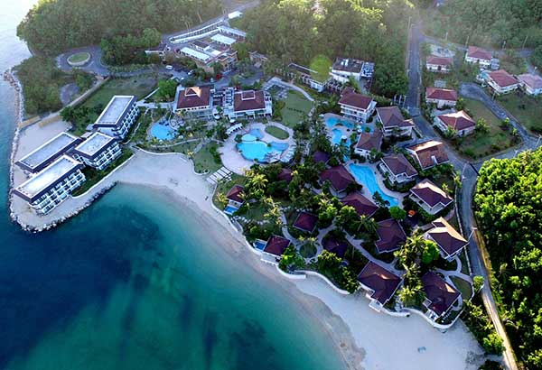

Escape to a luxury island getaway on Cagraray Island. Known for its pristine white sand and turquoise waters, Misibis Bay is the ultimate destination for relaxation and tropical adventure.

Misibis Bay is a luxury beach resort known for its white sand and clear waters. It offers a perfect blend of relaxation and exciting water activities. It is a premier destination for those seeking a high-end tropical vacation.
Developed into a high-end resort to promote tourism in Albay, Misibis Bay quickly became one of the top beach destinations in the Bicol region. Today, it attracts international travelers with its world-class amenities.
Key details about this private island resort.
Planning advice for a smooth island experience.
Activities to enjoy during your stay.
Enjoy the resort’s local Bicolano cuisine at the poolside restaurant!